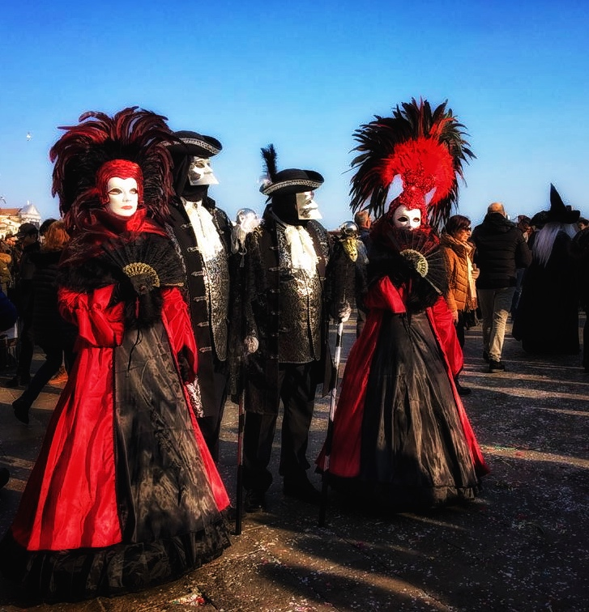
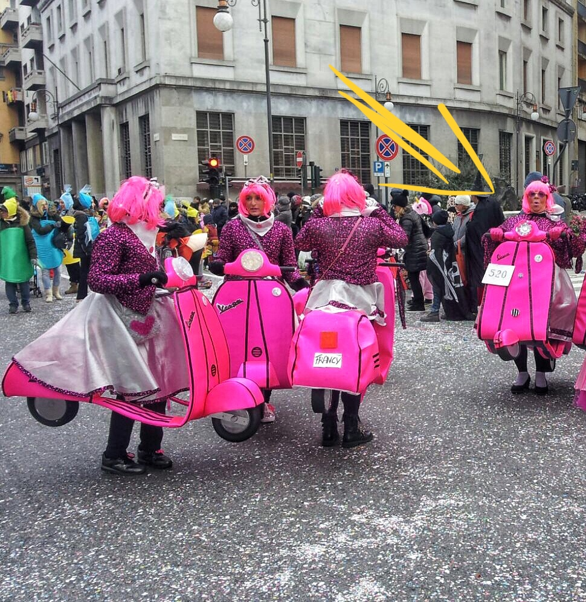

Photo by my friend Roberta
Sunday, when I learned that my friend Roberta went to Venice to see the carnival, I asked her to send me some photos of the event, one of which I'm now sharing with you. Il carnevale di Venezia is an experience that everyone should make at least once in a lifetime. I had the chance to see it a few years ago and loved it. I think it is such an elegant carnival where people come from everywhere to dress in gorgeous costumes and hide behind mysterious masks. Then, there is the other face of the Italian carnival: the hilarious one.
Photo by my friend Gabriella
I couldn't stop laughing when my friend Gabriella sent me this picture from Trieste. Have you seen the guy on the right? He is wheeling on the Vespa! Carnival has become an important event in Italy, even schools are closed during the festivities, which didn't happen when I was younger (bummer). What about you? Which kind of carnival do you like the most, the elegant one or the hilarious one? For me, it's hard to decide...